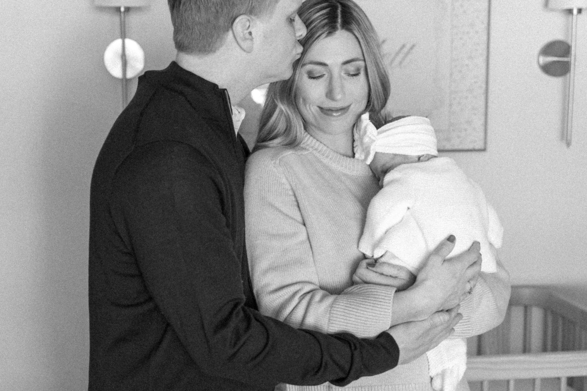

A thoughtful experience, created around the people you love most
I believe beautiful photographs begin with feeling comfortable enough to be present. I’ll help you choose the location, plan what to wear, and gently guide you throughout the session so you can relax and enjoy the time with your family.
There is no expectation of perfect behavior or practiced smiles. I give children time to warm up, allow families to move naturally, and offer direction whenever it is needed.
The result is a gallery that feels polished and artful while still reflecting the people you know and love.

Artfully preservingwhat matterswith intention and care
The Collections
Photography for the seasons you want to remember
Maternity
A quiet celebration of the life already changing yours.
Pregnancy holds so much at once—the anticipation, the tenderness, and the wonder of meeting someone you already love. Your maternity session is an opportunity to slow down and preserve this part of your story with photographs that feel graceful, intimate, and true to you.
Session details Maternity sessions are approximately one hour and usually take place outdoors at a thoughtfully selected location. Studio options are also available for an additional rental fee.
The beginning of a new rhythm, documented with patience and care.
Newborn sessions are intentionally unhurried. There is time to feed, soothe, change, and simply settle in together. Rather than expecting your baby or family to follow a schedule, I photograph these early days as they naturally unfold—the tiny details, the closeness, and the way everyone is learning one another.
Session details Lifestyle newborn sessions last approximately 60–90 minutes and take place in the comfort of your home. Studio options are available for an additional rental fee.
The connection, personality, and joy that make your family your own.
Family sessions are gently guided but never overly posed. I make room for movement, laughter, quieter moments, and the unexpected things children often bring. Your final gallery will feel cohesive and beautifully composed, while still looking unmistakably like your family.
Session details Family sessions are approximately one hour and usually take place outdoors at a location we select together.
Once you book, I’ll guide you through simple preparation so you feel ready and relaxed. This includes outfit suggestions, location guidance, and help choosing the best timing for your session.
02
During Your Session
Sessions are calm, playful, and natural. I’ll offer gentle direction while allowing space for authentic moments to unfold. You’ll never be left wondering what to do, and there’s no pressure for perfection — just connection.
03
After Your Session
You’ll receive a thoughtfully curated online gallery filled with images that reflect your family just as they are in this season — honest, warm, and timeless photographs you’ll cherish for years to come.
Frequently asked questions
That’s completely normal — and welcome! I’ll get on their level, follow their lead, and get silly when needed. The most meaningful images come from real connection, not practiced smiles.
Sessions can take place outdoors around Roswell and the surrounding areas, in the comfort of your home, or in a studio. Studio sessions are available for an additional rental fee, and I’ll help you choose the setting that best fits your vision.
After booking, you’ll receive style guidance with outfit suggestions that photograph beautifully in soft, natural light. Comfort always comes first, especially for little ones.
Reach out during pregnancy whenever you feel ready so we can reserve a flexible window around your due date. Lifestyle newborn sessions are often photographed during the first few weeks, but there is no strict age cutoff — we’ll choose timing that feels comfortable for your family.
Your thoughtfully curated online gallery is delivered within two weeks of your session.